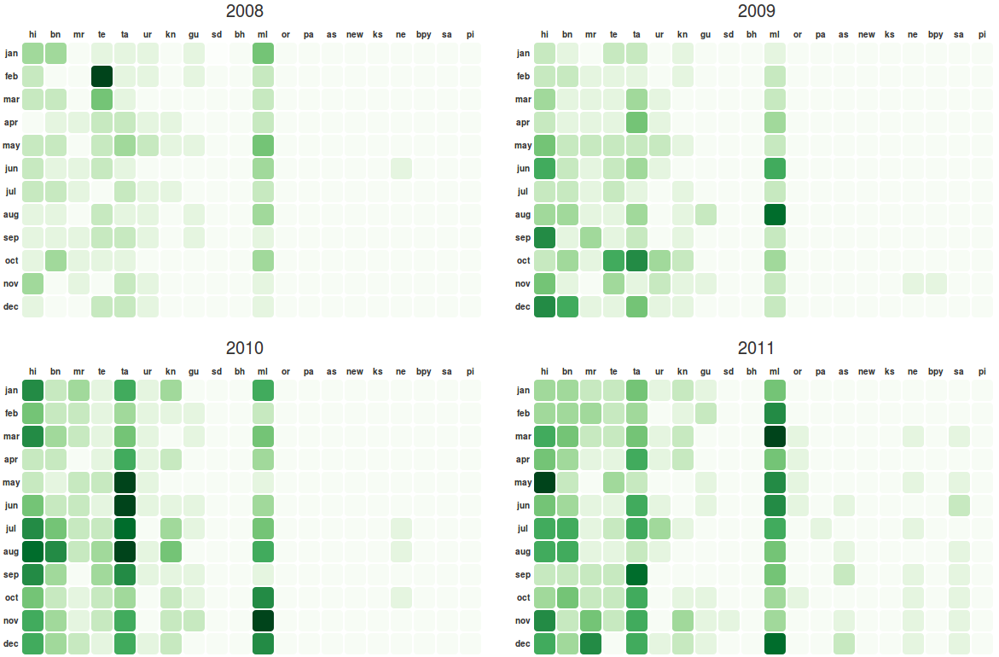
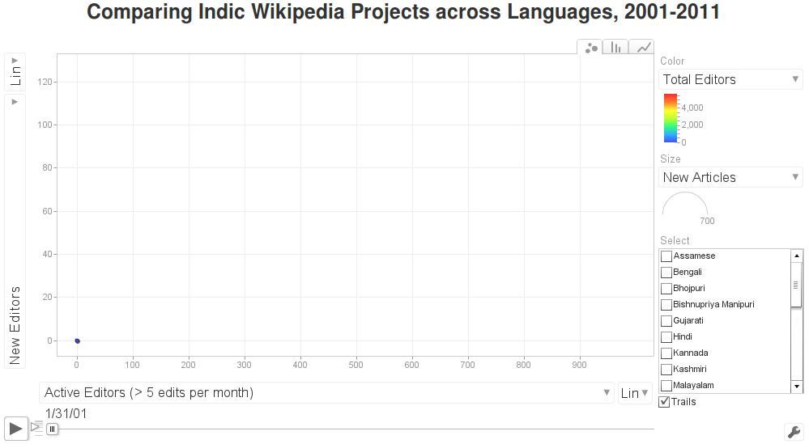

Co-authored with Sajjad Anwar. Published by the Centre for Internet and Society.
Sajjad Anwar and I undertook a series of visualisations of readership and editing data of the Indic Wikipedia projects in early 2013. The work was supported by the Centre for Internet and Society, and the data was provided by the Wikimedia Foundation. This post looks at the basic parameters associated with the Indic Wikipedia projects, and shares visualisations divided in three focus areas. .
Introduction
Understanding how the Indic or the Indian language Wikipedia projects are growing is something that we have been interested in for quite sometime. We were delighted to come across this opportunity from the Centre for Internet and Society (CIS) and Wikimedia Foundation. We divided our analyses into three focus areas: (1) basic parameters, (2) geographic patterns of edits, and (3) exploring the topics that receives the greatest number of edits. The existing infographics and data visualisations that we found about Indic Wikipedias mostly engaged on the first area, and also emphasised on yearly aggregates. We thought a more granular, that is monthly, understanding and a focus on the geographic and thematic spread of the edits would be very helpful to further appreciate the activities.
We began by collecting data about the following basic parameters:
- Number of Editors
- Number of Articles
- Page Views
- Number of Active Editors
- Number of New Articles
- Number of New Editors
- Edit Size
Acquiring the Data
We explored the MediaWiki API, ToolServer, and the Wikimedia Statistics Portal. These are several ways of obtaining data about Wikipedia in general. Depending on the use case, such as the quantity of data required or the need for customised/selective data scraping, any one or more of these methods of data gathering can be chosen. The API had limitations in terms of how much data you can access, and it is meant to be used to access actual Wikipedia entries. We, however, were looking for metadata about the entries/articles (such as when it was first created, when and how many times it was edited, etc.) and not the actual entries/articles, that is the actual contents of Indic Wikipedias. ToolServer is an excellent way of running custom scripts. Although, this takes for granted that user (of ToolServer) has substantial command over the back-end infrastructures and processes that Wikipedia runs on. We wrote a few scrapers to extract metadata about Indic Wikipedia projects from the ToolServer but not exactly being experts in the Wikipedia back-end systems, we found scraping from ToolServer rather time-and effort-intensive. The statistics portal is a well organised and an accessible place for collecting data for analyses. However, we came across several missing parameters and projects, that is the statistic portal did not have all the parameters and Wikipedia projects we were interested in. In our search for Indic Wikipedia datasets so far, we realised that the Wikimedia Analytics Team (WAT) puts a lot of effort in writing scripts and collecting various data at different levels. Wikimedia developer Yuvi Panda and the Access to Knowledge team at CIS, aware of our difficulty in obtaining the data, also pointed us towards the WAT. While we were already scraping data on some of the parameters, we approached the WAT whose prompt and very supportive response much accelerated our work process. The fantastic Wikimedia developers, especially Evan Rosen (a big ‘thank you’ for him) shared the needed data, which we cleaned up and archived at the Github repository for the project.
We obtained data for the period from January 2001 to December 2012. It appears that the Indic Wikipedia projects began their activities around 2005. A big part of cleaning the data involved identifying when each of the projects started and dropping data. There are 20 Indic Wikipedia projects with 4,98,964 articles, 5,689 editors and over 3,35,49,102 readers.
Deciding upon Chart Types
We spent quite some time discussing different methods of visualising the data. The major difficulty is that there are too many entities to be plotted. As each language must be plotted as a separate entity — point, line, circle, etc. — the chart has a tendency to become cluttered and illegible. Even if we take only one variable — say New Editors — there will still be 20 points or lines to be plotted. Hence, using any of the conventional charts becomes difficult. For example, if we chose a line chart with New Editors on the Y-axis and months on the X-axis, there will be 20 lines each of a different colour, representing different languages. Also, the five-six year monthly timeline translates into 60-72 temporal data points.
We have adopted two strategies, and related chart types, to address this difficulty.
Firstly, we used a monthly calendar-like heatmap chart that limits the temporal spread of data to one year for each section of the chart and uses a positionally uniform set of columns for each language so as to make reading the chart easier. Limiting each chart section to 12 months allow the user to focus on more granular movements of the variable concerned, say the number of New Editors per month. By representing each languages on an unique column, and not by an upwards-and-downwards moving line as in a line chart, makes it easier for the user to follow movements in each language (where movement is shown by the intensity of colour, as characteristic of heatmaps) without the need to have a separate coloured entity — point, line, circle — for each language.
Secondly, we used a motion chart, as made famous by Dr. Hans Rosling, that removes the temporal axis from X- and Y-axes of the chart and uses animated transition to represent temporal change. Motion chart has the unique ability to handle as many as five variables in an organised manner, using the following visual elements: X-axis, Y-axis, Z-axis (animated temporal transitions), size of bubbles, and colour of bubbles. It is, however, recommended that represented variables be limited to a maximum of four for easier legibility. In our case, we have used the X- and Y-axes to plot various related variables (which can be selected by the user) such as New Editors and New Articles, the Z-axis to represent time, and the colour of the bubbles to represent a third optional variable (also can be selected by the user). Since different Indian language Wikipedia projects often take a wide range of values for most variables, using the size of the bubble to represent any of those variables is avoidable. Further, the motion chart gives the user a lot of controls to explore the various projects and variables according to their interest and especially to compare particular projects and variables to each other.
Discussing the chart types with the Access to Knowledge team, we decided to use simpler line charts — emphasising upon single Indic Wikipedia projects — on the language-specific pages that we will be creating next.
Calendar Charts

Calendar heatmap chart of New Editors across Indic Wikipedia projects, 2008-2011. Source: http://geohacker.in/indicwiki/new-editors.
We visualised three parameters using the calendar heatmap strategy: (1) New Articles, (2) New Editors, (3) Active Editors.
The New Articles Calendar shows new articles posted on every Indic Wikipedias for every month since 2004. It was interesting to note the few number of articles in 2012 for all the languages. The first language to have the most number of new articles is Bengali. Hindi picks up around same time with fewer number of articles. Except Urdu and Nepali, every other language dropped in the number of new articles. However, we should remember that a lower number of new articles does not necessarily indicate at low overall activity in the project concerned.
Like the new articles, we wanted to explore the patterns in the number of new editors across all of the Indic Wikipedia projects. As you run through the new editors calendar chart, it is evident that there is consistent growth in the editor base for few projects like Hindi, Marathi, Bengali, Telugu, Tamil, Kannada and Malayalam. If one takes a step back and compares this with the number of new articles chart, something is not very clear – in some of the projects, there is a growth in the number of editors but not many new articles are posted. We are very keen to understand why this has happened.
If we look at the active editors calendar, Tamil started with 2 active editors in January 2004 and with few ups and downs grew to about 115 active editors in December 2012. Malayalam started slow in late 2004 with 2 editors and grew to 155 active editors in December 2012. We are sure the viewers should be able to find out more patterns by studying the charts closely and comparatively.
Motion Chart
We developed a motion chart comparing five variables: (1) Active Editors (> 5 edits per month), (2) New Editors, (3) Total Editors, (4) New Articles, and (5) Total Articles. When the visualisation is opened, Total Editors is plotted on the X-axis, Total Articles is plotted on the Y-axis, the colour of the bubbles indicate the Active Editors (Blue is low and Red is high) and the sizes of the bubbles are kept the same for easier comparison.
The user can click on the drop down menus at the X- and Y-axes, and next to the size and colour variables, and make them represent different variables.
We chose to configure the X- and Y-axes to show the data in logarithmic scales and not in linear scales. Since most projects experience small increments over time and there exists a wide difference between the most and the least popular/active projects, the logarithmic scale is better suited to represent the changes in the given data. The user has the option to select linear scale at the end of both X- and Y-axes (click on “Log”).
As evident in the visualisation, the Newari project and the Hindi-Malayalam project cluster show very interesting contrasting dynamics — while both achieve similar Total Articles numbers, the latter is much more editor-heavy. This suggests a smaller but more active editor community for the Newari project.
Please click on the image of the motion chart below to open the interactive version in a separate window. The code can be accessed at the project repository on GitHub.
